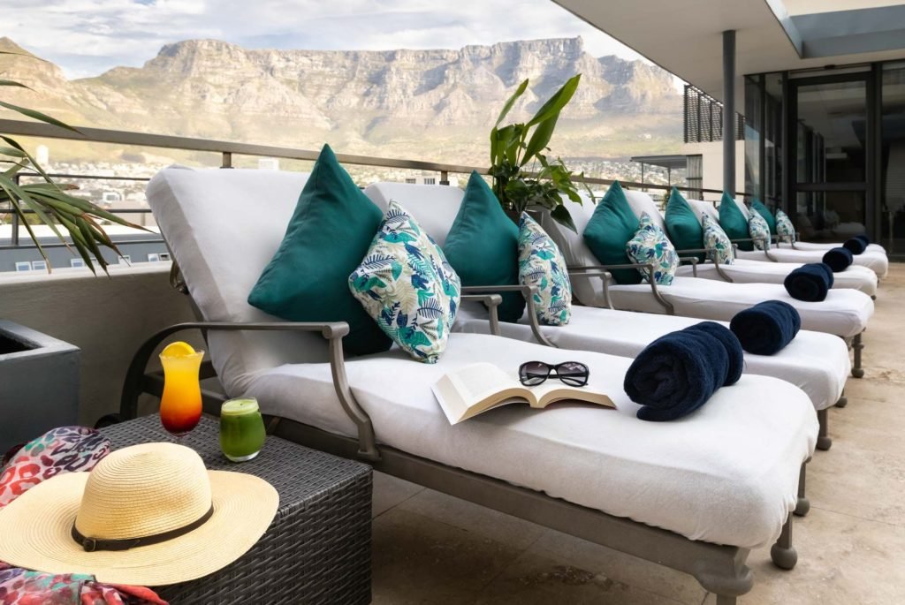
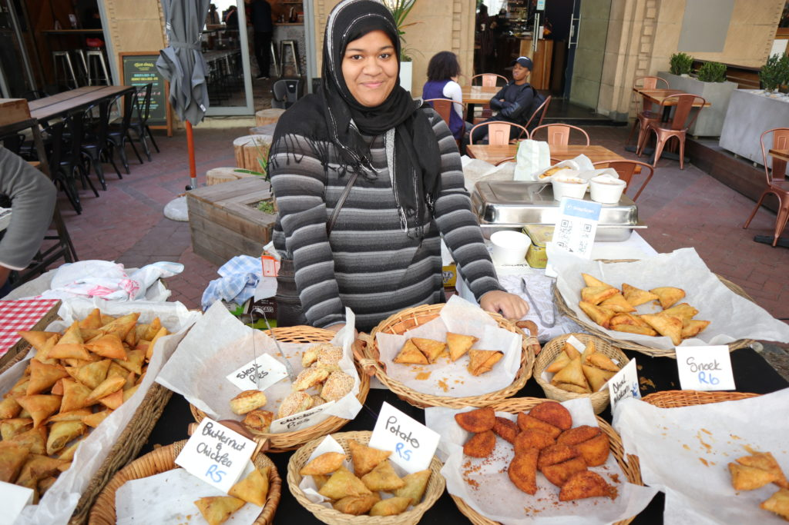
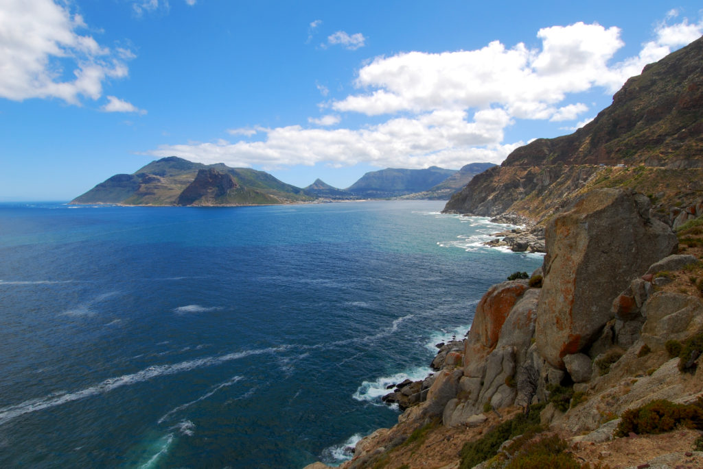
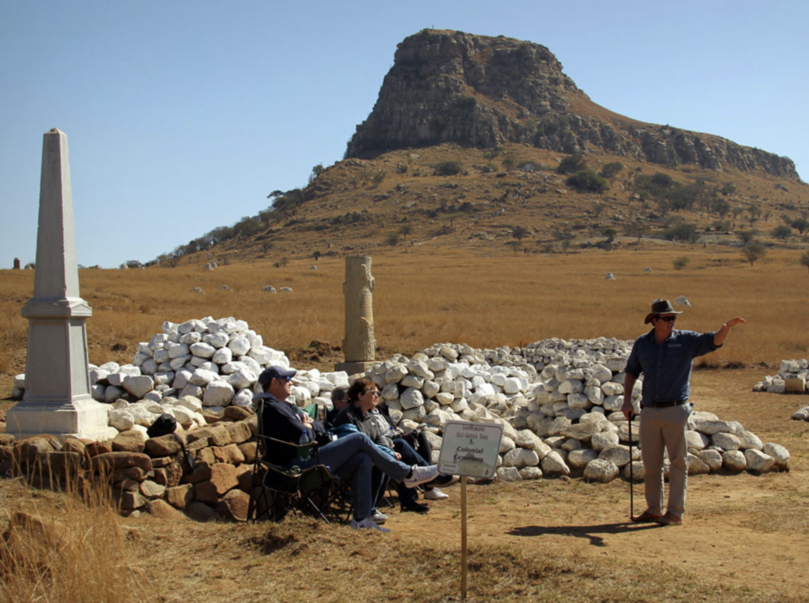
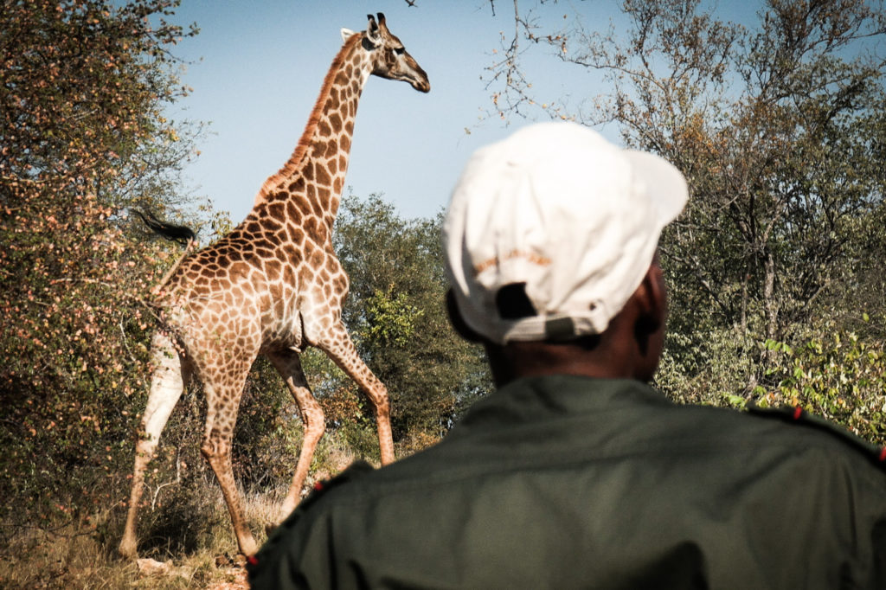
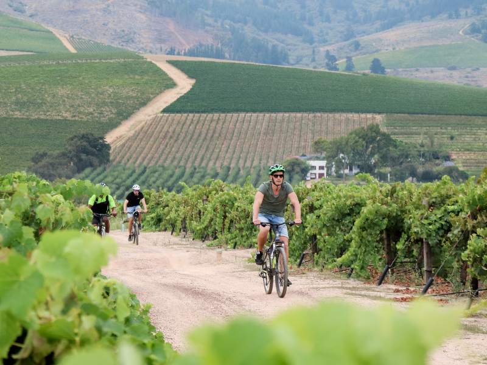
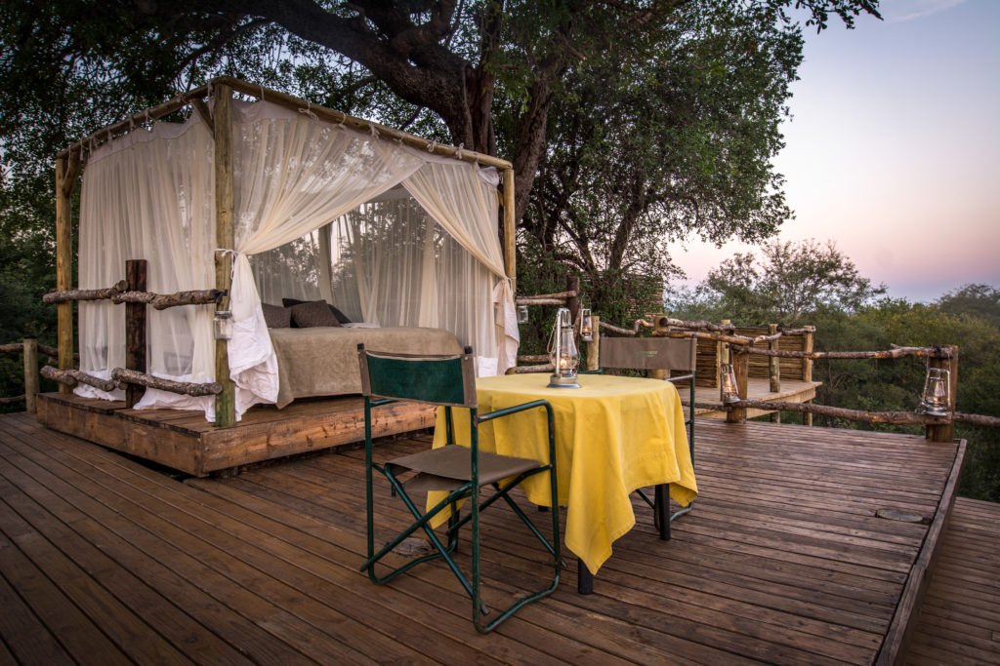
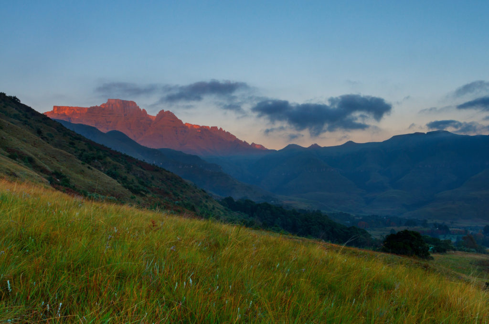
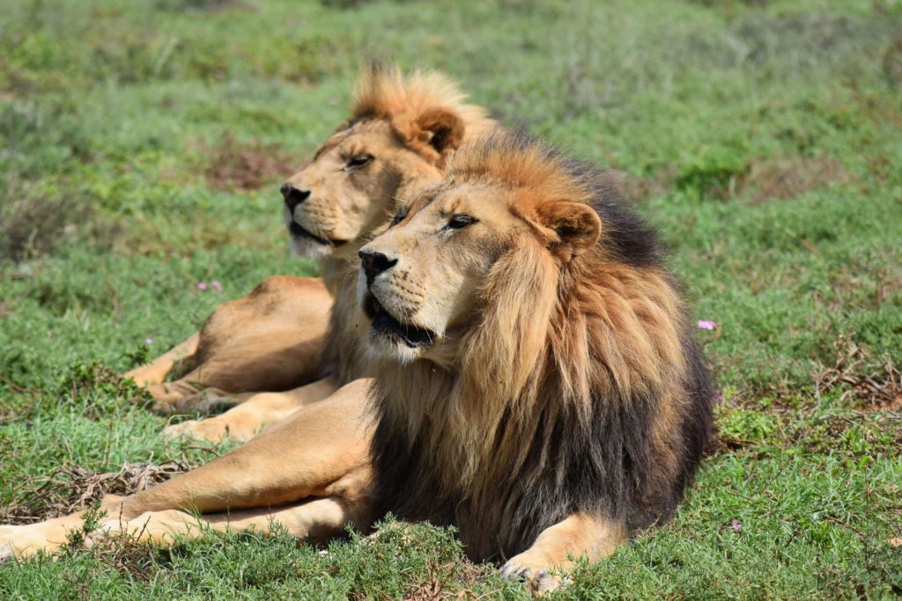

A day on safari in the Madikwe Game Reserve
— by Daniel Heatly

A memorable whale-watching adventure in Hermanus
— by Brandon Payne

A walk through Stellenbosch’s artisanal food and drink scene
— by Simone Jacobs

A warm family welcome and a slice of quintessential Africa at Three Tree Hill Lodge
— by Cheryl Blackburn

A warm welcome and service guaranteed at the Pepperclub
— by Efi Ella

A wine flight through Mont Rochelle’s vineyards
— by James Basson

Bush walks and boat cruising at Kariega Game Reserve
— by Wayne Howarth

By vintage-style tram through Franschhoek’s Wine Valley
— by Cathrine Lombard

Capture the moment on a photographic safari at Kariega Game Reserve
— by Brendon Jennings

Celebrate Africa's wildlife and culture at Jock Safari Lodge
— by Philemon Mhlanga

Check out the steamy goings on at the artsy Turbine Hotel
— by Rudi Wagenaar

Clifftops, wildlife and beaches: the Robberg Nature Reserve hike
— by Cameron Reeder

Cruise down the St Lucia Estuary to see hippos and crocs
— by Pierre Vivien Delvaux

Cycle through the Constantia Winelands
— by Sally Petersen

Dine in the bush at Tinga Lodge in Lion Sands Game Reserve
— by Cathrine Vosloo

Discover Cape Town on foot
— by Sally Petersen

Discover Cape Town’s history through food
— by Rupesh Kassen

Discover the beginning of our species at the Cradle of Humankind
— by Christiane Glanz

Discover the spirit of Soweto on two wheels
— by Phillip Malepa

Enjoy rare fynbos and migrating whales at Grootbos reserve
— by Jono Durham

Experience Indian cuisine and culture at The Oyster Box
— by Kevin Joseph

Experience the romance of Africa at Ukhozi Lodge, Kariega Game Reserve
— by Rosie Rickards

Explore the Cape Peninsula by sidecar
— by Tim Clarke

Explore the Central Drakensberg mountains from Three Tree Hill Lodge
— by Cheryl Blackburn

Exploring Shamwari’s walking trails
— by Jacques Human

Family-friendly safaris at Kariega Game Reserve's Main Lodge
— by Dave Mariba

Fly and dine in the Cape Winelands
— by Federico Chabrat

Fugitives' Drift: where the battles of Isandlwana and Rorke’s Drift come to life
— by Nicky Rattray

Game drives and bush walks at Shamwari Private Game Reserve
— by Jacques Human

Getting out in nature from Three Tree Hill Lodge
— by Cheryl Blackburn

Giving back at Fugitives’ Drift Lodge
— by Nicky Rattray

Hear stories from the Battle of Spioenkop at Three Tree Hill
— by Cheryl Blackburn

Hike mighty Table Mountain
— by Sally Petersen

Hog Hollow Country Lodge: turn off the Garden Route for a little piece of heaven
— by Andy Fermor

Immerse yourself in Zulu culture from Thanda Safari Lodge
— by Pierre Vivien Delvaux

Intimate and private safaris at Little Garonga
— by Bernie Smith

Kanonkop House: a lagoon retreat in Knysna
— by Liesl Rentzke

Kids on Safari at Shamwari Riverdene Family Lodge
— by Rozelle de Wet

Lairds Lodge: a Cape Dutch homestead offering a heart-felt welcome
— by Bee Bee Bhebhe

Lanzerac Hotel & Spa: fine wines, pampering and old-world charm
— by Fundi Ziqubu

Learn about rhino conservation at Kariega Game Reserve
— by Daniel Haesslich

Lelapa by Madikwe Safari Lodge: where kids enjoy their very own game drives
— by Jarrod Cross

Look for wildlife from your private plunge pool at Shamwari’s Sindile Safari Lodge
— by Kalelani Ranwashe

MalaMala: A community owned camp with unfiltered wildlife
— by Vusi Mpandza

Meet the team at Shamwari's Wildlife Rehabilitation Centre
— by Lisa Horn

Mont Rochelle: the Winelands’ most romantic spot
— by James Basson

Mount Nelson: lose yourself in an oasis in the lee of Table Mountain
— by Gabriella Palmer Bolton

My Cape Peninsula: coastal views and penguin encounters
— by Silke Bullerdiek

My Cape Town: explore with a local
— by Angelo Forbes

Nostalgic safari experience at MCH Private Tented Camp
— by Bernie Smith

Off-road adventure at Fugitives’ Drift
— by Nicky Rattray

Off-the-chart exclusivity at Dithaba by Madikwe Safari Lodge
— by Jarrod Cross

On safari at Kariega Game Reserve
— by Wayne Howarth

Oudtshoorn: the small town with big appeal
— by Alisha Kirk

Relax, reset and rejuvenate at Summerfields Rose Retreat & Spa
— by Sean Ward

Relive the battles of Isandlwana and Rorke's Drift
— by Nicky Rattray

Romantic bubble baths under an African night sky at Garonga
— by Bernie Smith

Safari activities at Jock Safari Lodge, Kruger’s first private concession
— by Lazarus Mkhonto

Safari and beach from River Lodge at Kariega Game Reserve
— by Cedric Sandi

Safari for the soul at Garonga
— by Bonginkosi Mkhabela

See herds of elephant without moving an inch from the pool at aha Thakadu River Camp
— by Patience Matlapeng

Sipping and cycling through the Cape Winelands
— by Quintin Smith

Sleep out under the stars in a treehouse at Tinga Lodge, Lion Sands Game Reserve
— by Ryno Vosloo

Soar above the Atlantic Seaboard in a helicopter
— by Federico Chabrat

Spend a night under the stars on Garonga’s sleep out deck
— by Josia Sibuyi

Spot dolphins on an eco-marine tour of Plettenberg Bay
— by Cameron Reeder

Stay at aha Makalali to see wildlife from all angles
— by Hanlie Lombard

Stay at The Robertson Small Hotel, a historic Victorian manor
— by June Bouwer

Stay in the world’s whale-watching capital at Abalone Guest Lodge
— by Dijana Smal

Take a gourmet heli-flight from The Twelve Apostles Hotel & Spa
— by Juan Wolmarans

Take to the skies with a microlight flight at Garonga Private Game Reserve
— by Kyle Kaidy

Tented luxury at Garonga Safari Camp
— by Josia Sibuyi

Tented luxury at Settlers Drift, Kariega Game Reserve
— by Zamu Nonyati

Thanda Tented Camp: where you can immerse yourself in the bush
— by Pierre Vivien Delvaux

The awe-inspiring landscapes of the Swartberg Mountains
— by Jan Bester

The Blue Train: a romantic and luxurious hotel on wheels
— by Amanda England

The hotel where you can order Nobu for room service
— by Luvo Ntezo

The Knysna oyster cruise
— by Brad Cable

The magic of the night sky in Oudtshoorn
— by Jan Bester

The Oyster Box: coastal charm, blissful views and a celebrity cat
— by Roberto Rosa

The Plettenberg: the ultimate South African seaside escape
— by Martina Barth

The Silo hotel: a celebration of art, architecture and design
— by Irene Boaventura

The sunset Cape Town cruise
— by Peter Statham

The Tsitsikamma woodcutter journey
— by Maxine Munnik

The Victoria & Alfred Hotel: stay at the heart of Cape Town's historic waterfront
— by Andy Nold

The Winchester: Cape Town’s grande dame
— by Michael Liffmann

Twelve Apostles Hotel & Spa: views from mountain to sea, sunrise to sunset
— by Juan Wolmarans

Unbeatable glamour on Rovos Rail
— by Tiffany Vos-Thane

Uncover Newtown, Maboneng and the Apartheid Museum with a true local
— by Bongani Mathebula

View breathtaking scenery on the Panorama Route
— by Zona Swanepoel

Views and Edwardian elegance at Shamwari’s Long Lee Manor
— by Lize-Mari Dykema

Visit a local village from Three Tree Hill Lodge
— by Ntobeko Ntshingila

Visit the Born Free Big Cat Sanctuaries at Shamwari Private Game Reserve
— by Catherine Gillson

Visit townships and Robben Island on the Walk to Freedom
— by Khonaye Tuswa

Waking up with the meerkats in Oudtshoorn
— by JD Glinister

Wildlife conservation at Thanda Safari Lodge
— by Pierre Vivien Delvaux

Wildlife encounters and stylish villas at Karula, Kapama Private Game Reserve
— by Ian de Weerd

Wildlife watching from your private plunge pool at Tinga Lodge, Lion Sands Game Reserve
— by Cathrine Vosloo

Zulu culture at the heart of Thanda Safari Lodge
— by Pierre Vivien Delvaux